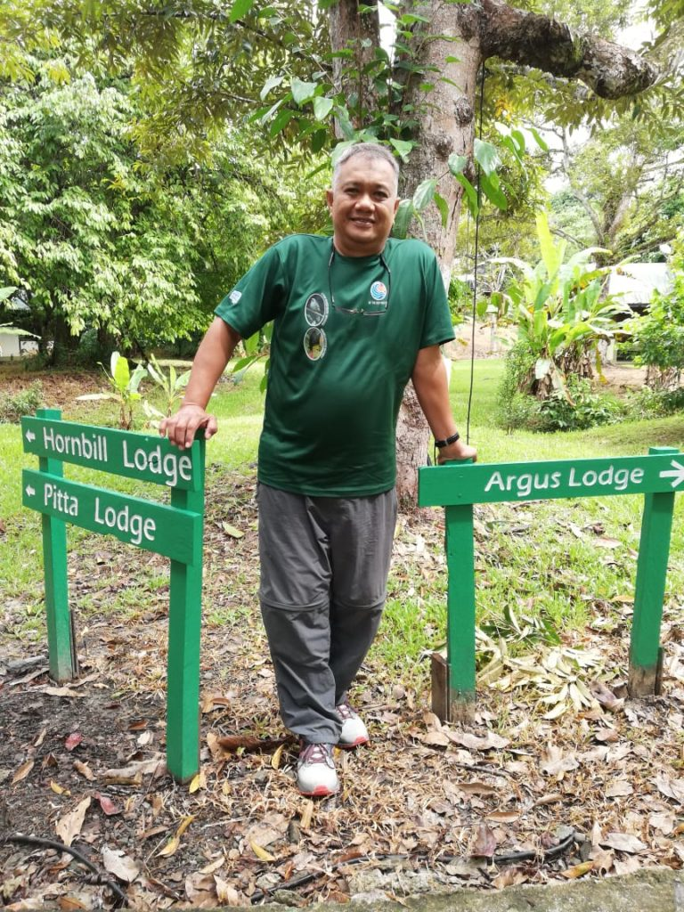
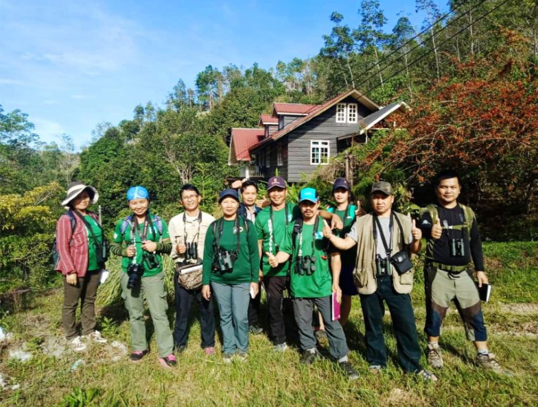
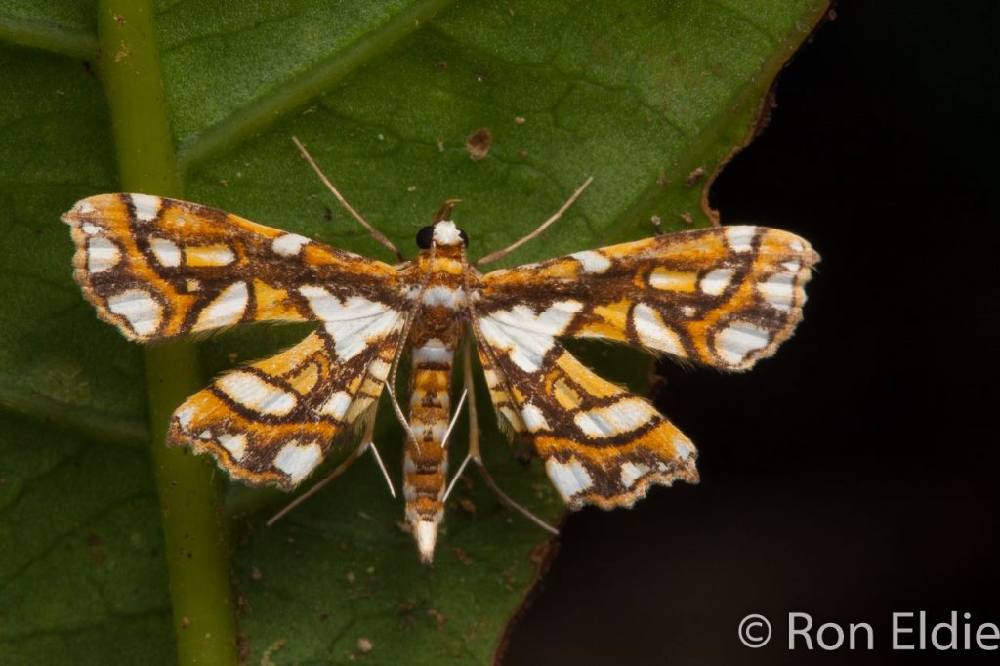

This platform aims to introduce you to my current activities, background, and publications. Here, you will find information about my work on the conservation of the Kinabalu Birdwing butterfly, my extensive research on Pyraloid Moths of Borneo, and my various other contributions to the field of entomology. 20th December 2022
MA, D.Phil. (Oxford), Fellow of the Royal Entomological Society (UK) (F.R.E.S.), Fellow of the Royal Geographical Society (UK) (F.R.G.S.)
News:
In a man-made jungle at the Shangri-la Tg Aru Resort, Kota Kinabalu: Paul, Datuk Haji Zainie Abdul Aucasa, Suzanne & Stephen. Celebrating the WWF Malaysia 50th anniversary dinner
Paul Foronda, Co-chair of KBB. Homestay & Conservation Project of the Rotary Club of Kota Kinabalu
L to R. Co-chair of KBB Dr. Stephen Sutton, Dr Arthur Chung, Deputy Director (Research) of the Forest Research Centre of the Sabah Forestry Department (Sabah’s senior government entomologist. Associate member of KBB project). Paul Foronda & Suzanne Goh, Field Organizer.

Female Kinabalu (or Borneo) Birdwing – Troides andromache) Mountain Valley Resort, Kiau Gap, Sabah. Photo: Arthur Chung
Internationally classified as rare and endangered in 1987, we are now re-assessing its status following a request from the IUCN (International Union for Conservation of Nature) via the Swallowtail and Birdwing Butterfly Trust of London. The Kinabalu Birdwing is one of four species of Birdwings in Sabah and the only one confined to the mountains.
We are also collaborating with Homestay operators in Kg Kiau, located at the foothills of Mt. Kinabalu, to cultivate the host plants essential for the caterpillars of the majestic Kinabalu Birdwing butterfly. This initiative aims to attract paying visitors who are eager to photograph these free-flying giants in their natural habitat, thereby creating a new and sustainable source of income for the community.
Ongoing: Pyraloid Moths of Borneo
Featured is an image of a Musotiminae species (Crambidae), specifically Musotima new species #13, discovered in the Tamparuli area of Sabah, Malaysian Borneo. We extend our gratitude to Ron Eldie for this contribution. Pyraloid Moths of Borneo
Pyraloid Moths of Borneo
Since 2009, Stephen, along with three other researchers—Dato’ Henry Barlow, Lim Kooi Fong, and Dr. Terry Whitaker—has been dedicated to compiling a comprehensive guide to the Pyraloid Moths of Borneo. Volume 1 and Volume 2 are already published. In 2023, we anticipate the valuable contribution of Dr. Richard Mally as the lead author for Volume 3.
This ambitious project encompasses the publication of three printed volumes aimed at the identification of species within the Superfamily Pyraloidea, of which approximately 2,000 species are known in Borneo to date. Additionally, a website that complements the printed volumes will be available.
As someone deeply passionate about insect biodiversity, I frequently deliver lectures on this subject and canopy research to a diverse audience that includes academics, civil society groups, and tour participants in Sabah. Additionally, I contribute articles and reviews to further knowledge in my field of expertise.
From 1999 to 2014, I was a partner in the brick-and-mortar and online bookstore Borneo Books. For an insightful account of this business endeavor, readers are invited to peruse my essay “Decline & Fall of a Small Bookshop” located in the ‘Stories’ section. It is important to note that the website borneobooks.com has since been decommissioned.